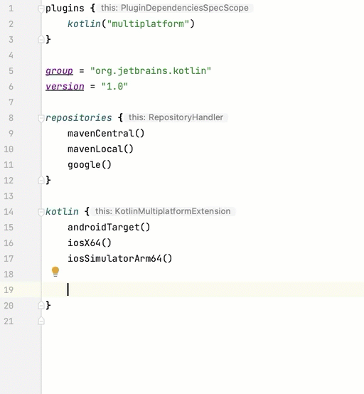

Kotlin 1.9.20 的新特性
The Kotlin 1.9.20 release is out, the K2 compiler for all the targets is now in Beta, and Kotlin Multiplatform is now Stable. Additionally, here are some of the main highlights:
- New default hierarchy template for setting up multiplatform projects
- Full support for the Gradle configuration cache in Kotlin Multiplatform
- Custom memory allocator enabled by default in Kotlin/Native
- Performance improvements for the garbage collector in Kotlin/Native
- New and renamed targets in Kotlin/Wasm
- Support for the WASI API in the standard library for Kotlin/Wasm
You can also find a short overview of the updates in this video:
YouTube 视频：What's new in Kotlin 1.9.20
IDE support
The Kotlin plugins that support 1.9.20 are available for:
| IDE | Supported versions |
|---|---|
| IntelliJ IDEA | 2023.1.x, 2023.2.x, 2023.x |
| Android Studio | Hedgehog (2023.1.1), Iguana (2023.2.1) |
Starting from IntelliJ IDEA 2023.3.x and Android Studio Iguana (2023.2.1) Canary 15, the Kotlin plugin is automatically included and updated. All you need to do is update the Kotlin version in your projects.
New Kotlin K2 compiler updates
The Kotlin team at JetBrains is continuing to stabilize the new K2 compiler, which will bring major performance improvements, speed up new language feature development, unify all the platforms that Kotlin supports, and provide a better architecture for multiplatform projects.
K2 is currently in Beta for all targets. Read more in the release blog post
Support for Kotlin/Wasm
Since this release, the Kotlin/Wasm supports the new K2 compiler. Learn how to enable it in your project.
Preview kapt compiler plugin with K2
Support for K2 in the kapt compiler plugin is Experimental. Opt-in is required (see details below), and you should use it only for evaluation purposes.
In 1.9.20, you can try using the kapt compiler plugin with the K2 compiler.
To use the K2 compiler in your project, add the following options to your gradle.properties file:
kotlin.experimental.tryK2=true
kapt.use.k2=true
Alternatively, you can enable K2 for kapt by completing the following steps:
- In your
build.gradle.ktsfile, set the language version to2.0. - In your
gradle.propertiesfile, addkapt.use.k2=true.
If you encounter any issues when using kapt with the K2 compiler, please report them to our issue tracker.
How to enable the Kotlin K2 compiler
Enable K2 in Gradle
To enable and test the Kotlin K2 compiler, use the new language version with the following compiler option:
-language-version 2.0
You can specify it in your build.gradle.kts file:
kotlin {
sourceSets.all {
languageSettings {
languageVersion = "2.0"
}
}
}
Enable K2 in Maven
To enable and test the Kotlin K2 compiler, update the <project/> section of your pom.xml file:
<properties>
<kotlin.compiler.languageVersion>2.0</kotlin.compiler.languageVersion>
</properties>
Enable K2 in IntelliJ IDEA
To enable and test the Kotlin K2 compiler in IntelliJ IDEA, go to Settings | Build, Execution, Deployment |
Compiler | Kotlin Compiler and update the Language Version field to 2.0 (experimental).
Leave your feedback on the new K2 compiler
We would appreciate any feedback you may have!
- Provide your feedback directly to K2 developers on Kotlin Slack – get an invite and join the #k2-early-adopters channel.
- Report any problems you faced with the new K2 compiler on our issue tracker.
- Enable the Send usage statistics option to allow JetBrains to collect anonymous data about K2 usage.
Kotlin/JVM
Starting with version 1.9.20, the compiler can generate classes containing Java 21 bytecode.
Kotlin/Native
Kotlin 1.9.20 includes a Stable memory manager with the new memory allocator enabled by default, performance improvements for the garbage collector, and other updates:
- Custom memory allocator enabled by default
- Performance improvements for the garbage collector
- Incremental compilation of
klibartifacts - Managing library linkage issues
- Companion object initialization on class constructor calls
- Opt-in requirement for all cinterop declarations
- Custom message for linker errors
- Removal of the legacy memory manager
- Change to our target tiers policy
Custom memory allocator enabled by default
Kotlin 1.9.20 comes with the new memory allocator enabled by default. It's designed to replace the previous default allocator,
mimalloc, to make garbage collection more efficient and improve the runtime performance of the Kotlin/Native memory manager.
The new custom allocator divides system memory into pages, allowing independent sweeping in consecutive order. Each allocation becomes a memory block within a page, and the page keeps track of block sizes. Different page types are optimized for various allocation sizes. The consecutive arrangement of memory blocks ensures efficient iteration through all allocated blocks.
When a thread allocates memory, it searches for a suitable page based on the allocation size. Threads maintain a set of pages for different size categories. Typically, the current page for a given size can accommodate the allocation. If not, the thread requests a different page from the shared allocation space. This page may already be available, require sweeping, or have to be created first.
The new allocator allows for multiple independent allocation spaces simultaneously, which will enable the Kotlin team to experiment with different page layouts to improve performance even further.
How to enable the custom memory allocator
Starting with Kotlin 1.9.20, the new memory allocator is the default. No additional setup is required.
If you experience high memory consumption, you can switch back to mimalloc or the system allocator with -Xallocator=mimalloc
or -Xallocator=std in your Gradle build script. Please report such issues in YouTrack to help
us improve the new memory allocator.
For the technical details of the new allocator's design, see this README.
Performance improvements for the garbage collector
The Kotlin team continues to improve the performance and stability of the new Kotlin/Native memory manager. This release brings a number of significant changes to the garbage collector (GC), including the following 1.9.20 highlights:
Full parallel mark to reduce the pause time for the GC
Previously, the default garbage collector performed only a partial parallel mark. When the mutator thread was paused, it would mark the GC's start from its own roots, like thread–local variables and the call stack. Meanwhile, a separate GC thread was responsible for marking the start from global roots, as well as the roots of all mutators that were actively running the native code and therefore not paused.
This approach worked well in cases where there were a limited number of global objects and the mutator threads spent a considerable amount of time in a runnable state executing Kotlin code. However, this is not the case for typical iOS applications.
Now the GC uses a full parallel mark that combines paused mutators, the GC thread, and optional marker threads to process the mark queue. By default, the marking process is performed by:
- Paused mutators. Instead of processing their own roots and then being idle while not actively executing code, they contribute to the whole marking process.
- The GC thread. This ensures that at least one thread will perform marking.
This new approach makes the marking process more efficient, reducing the pause time of the GC.
Tracking memory in big chunks to improve the allocation performance
Previously, the GC scheduler tracked the allocation of each object individually. However, neither the new default custom
allocator nor the mimalloc memory allocator allocates separate storage for each object; they allocate large areas for several objects at once.
In Kotlin 1.9.20, the GC tracks areas instead of individual objects. This speeds up the allocation of small objects by reducing the number of tasks performed on each allocation and, therefore, helps to minimize the garbage collector's memory usage.
Incremental compilation of klib artifacts
This feature is Experimental. It may be dropped or changed at any time. Opt-in is required (see details below). Use it only for evaluation purposes. We would appreciate your feedback on it in YouTrack.
Kotlin 1.9.20 introduces a new compilation time optimization for Kotlin/Native.
The compilation of klib artifacts into native code is now partially incremental.
When compiling Kotlin source code into native binary in debug mode, the compilation goes through two stages:
- Source code is compiled into
klibartifacts. klibartifacts, along with dependencies, are compiled into a binary.
To optimize the compilation time in the second stage, the team has already implemented compiler caches for dependencies.
They are compiled into native code only once, and the result is reused every time a binary is compiled.
But klib artifacts built from project sources were always fully recompiled into native code at every project change.
With the new incremental compilation, if the project module change causes only a partial recompilation of source code into
klib artifacts, just a part of the klib is further recompiled into a binary.
To enable incremental compilation, add the following option to your gradle.properties file:
kotlin.incremental.native=true
If you face any issues, report such cases to YouTrack.
Managing library linkage issues
This release improves the way the Kotlin/Native compiler handles linkage issues in Kotlin libraries. Error messages now include more readable declarations as they use signature names instead of hashes, helping you find and fix the issue more easily. Here's an example:
No function found for symbol 'org.samples/MyClass.removedFunction|removedFunction(kotlin.Int;kotlin.String){}[0]'
The Kotlin/Native compiler detects linkage issues between third-party Kotlin libraries and reports errors at runtime. You might face such issues if the author of one third-party Kotlin library makes an incompatible change in experimental APIs that another third-party Kotlin library consumes.
Starting with Kotlin 1.9.20, the compiler detects linkage issues in silent mode by default. You can adjust this setting in your projects:
- If you want to record these issues in your compilation logs, enable warnings with the
-Xpartial-linkage-loglevel=WARNINGcompiler option. - It's also possible to raise the severity of reported warnings to compilation errors with
-Xpartial-linkage-loglevel=ERROR. In this case, the compilation fails, and you get all the errors in the compilation log. Use this option to examine the linkage issues more closely.
// An example of passing compiler options in a Gradle build file:
kotlin {
macosX64("native") {
binaries.executable()
compilations.configureEach {
compilerOptions.configure {
// To report linkage issues as warnings:
freeCompilerArgs.add("-Xpartial-linkage-loglevel=WARNING")
// To raise linkage warnings to errors:
freeCompilerArgs.add("-Xpartial-linkage-loglevel=ERROR")
}
}
}
}
If you face unexpected problems with this feature, you can always opt out with the
-Xpartial-linkage=disable compiler option. Don't hesitate to report such cases to our issue
tracker.
Companion object initialization on class constructor calls
Starting with Kotlin 1.9.20, the Kotlin/Native backend calls static initializers for companion objects in class constructors:
class Greeting {
companion object {
init {
print("Hello, Kotlin!")
}
}
}
fun main() {
val start = Greeting() // Prints "Hello, Kotlin!"
}
The behavior is now unified with Kotlin/JVM, where a companion object is initialized when the corresponding class matching the semantics of a Java static initializer is loaded (resolved).
Now that the implementation of this feature is more consistent between platforms, it's easier to share code in Kotlin Multiplatform projects.
Opt-in requirement for all cinterop declarations
Starting with Kotlin 1.9.20, all Kotlin declarations generated by the cinterop tool from C and Objective-C libraries, like
libcurl and libxml, are marked with @ExperimentalForeignApi. If the opt-in annotation is missing, your code won't compile.
This requirement reflects the Experimental status of the import of C and Objective-C libraries. We recommend that you confine its use to specific areas in your projects. This will make your migration easier once we begin stabilizing the import.
As for native platform libraries shipped with Kotlin/Native (like Foundation, UIKit, and POSIX), only some of their APIs need an opt-in with
@ExperimentalForeignApi. In such cases, you get a warning with an opt-in requirement.
Custom message for linker errors
If you're a library author, you can now help your users resolve linker errors with custom messages.
If your Kotlin library depends on C or Objective-C libraries, for example, using the CocoaPods integration, its users need to have these dependent libraries locally on the machine or configure them explicitly in the project build script. If this was not the case, users used to get a confusing "Framework not found" message.
You can now provide a specific instruction or a link in the compilation failure message. To do that, pass the -Xuser-setup-hint
compiler option to cinterop or add a userSetupHint=message property to your .def file.
Removal of the legacy memory manager
The new memory manager was introduced in Kotlin 1.6.20 and became the default in 1.7.20. Since then, it has been receiving further updates and performance improvements and has become Stable.
The time has come to complete the deprecation cycle and remove the legacy memory manager. If you're still using it, remove
the kotlin.native.binary.memoryModel=strict option from your gradle.properties and follow our Migration guide
to make the necessary changes.
Change to our target tiers policy
We've decided to upgrade the requirements for tier 1 support. The Kotlin team is now committed to providing source and binary compatibility between compiler releases for targets eligible for tier 1. They must also be regularly tested with CI tools to be able to compile and run. Currently, tier 1 includes the following targets for macOS hosts:
macosX64macosArm64iosSimulatorArm64iosX64
In Kotlin 1.9.20, we've also removed a number of previously deprecated targets, namely:
iosArm32watchosX86wasm32mingwX86linuxMips32linuxMipsel32
See the full list of currently supported targets.
Kotlin Multiplatform
Kotlin 1.9.20 focuses on the stabilization of Kotlin Multiplatform and makes new steps in improving developer experience with the new project wizards and other notable features:
- Kotlin Multiplatform is Stable
- Template for configuring multiplatform projects
- New project wizard
- Full support for the Gradle Configuration cache
- Easier configuration of new standard library versions in Gradle
- Default support for third-party cinterop libraries
- Support for Kotlin/Native compilation caches in Compose Multiplatform projects
- Compatibility guidelines
Kotlin Multiplatform is Stable
The 1.9.20 release marks an important milestone in the evolution of Kotlin: Kotlin Multiplatform has finally become Stable. This means that the technology is safe to use in your projects and 100% ready for production. It also means that further development of Kotlin Multiplatform will continue according to our strict backward compatibility rules.
Please note that some advanced features of Kotlin Multiplatform are still evolving. When using them, you'll receive a warning that describes
the current stability status of the feature you're using. Before using any experimental functionality in IntelliJ IDEA,
you'll need to enable it explicitly in Settings | Advanced Settings | Kotlin | Experimental Multiplatform.
- Visit the Kotlin blog to learn more about the Kotlin Multiplatform stabilization and future plans.
- Check out the Multiplatform compatibility guide to see what significant changes were made on the way to stabilization.
- Read about the mechanism of expected and actual declarations, an important part of Kotlin Multiplatform that was also partially stabilized in this release.
Template for configuring multiplatform projects
Starting with Kotlin 1.9.20, the Kotlin Gradle plugin automatically creates shared source sets for popular multiplatform scenarios. If your project setup is one of them, you don't need to configure the source set hierarchy manually. Just explicitly specify the targets necessary for your project.
Setup is now easier thanks to the default hierarchy template, a new feature of the Kotlin Gradle plugin. It's a predefined template of a source set hierarchy built into the plugin. It includes intermediate source sets that Kotlin automatically creates for the targets you declared. See the full template.
Create your project easier
Consider a multiplatform project that targets both Android and iPhone devices and is developed on an Apple silicon MacBook. Compare how this project is set up between different versions of Kotlin:
| Kotlin 1.9.0 and earlier (a standard setup) | Kotlin 1.9.20 |
| ```kotlin kotlin { androidTarget() iosArm64() iosSimulatorArm64() sourceSets { val commonMain by getting val iosMain by creating { dependsOn(commonMain) } val iosArm64Main by getting { dependsOn(iosMain) } val iosSimulatorArm64Main by getting { dependsOn(iosMain) } } } ``` | ```kotlin kotlin { androidTarget() iosArm64() iosSimulatorArm64() // The iosMain source set is created automatically } ``` |
Notice how the use of the default hierarchy template considerably reduces the amount of boilerplate code needed to set up your project.
When you declare the androidTarget, iosArm64, and iosSimulatorArm64 targets in your code, the Kotlin Gradle plugin finds
suitable shared source sets from the template and creates them for you. The resulting hierarchy looks like this:
 {thumbnail="true" width="350" thumbnail-same-file="true"}
{thumbnail="true" width="350" thumbnail-same-file="true"}
Green source sets are actually created and included in the project, while gray ones from the default template are ignored.
Use completion for source sets
To make it easier to work with the created project structure, IntelliJ IDEA now provides completion for source sets created with the default hierarchy template:

Kotlin also warns you if you attempt to access a source set that doesn't exist because you haven't declared the respective target.
In the example below, there is no JVM target (only androidTarget, which is not the same). But let's try to use the jvmMain source set
and see what happens:
kotlin {
androidTarget()
iosArm64()
iosSimulatorArm64()
sourceSets {
jvmMain {
}
}
}
In this case, Kotlin reports a warning in the build log:
w: Accessed 'source set jvmMain' without registering the jvm target:
kotlin {
jvm() /* <- register the 'jvm' target */
sourceSets.jvmMain.dependencies {
}
}
Set up the target hierarchy
Starting with Kotlin 1.9.20, the default hierarchy template is automatically enabled. In most cases, no additional setup is required.
However, if you're migrating existing projects created before 1.9.20, you might encounter a warning if you had previously
introduced intermediate sources manually with dependsOn() calls. To solve this issue, do the following:
If your intermediate source sets are currently covered by the default hierarchy template, remove all manual
dependsOn()calls and source sets created withby creatingconstructions.To check the list of all default source sets, see the full hierarchy template.
If you want to have additional source sets that the default hierarchy template doesn't provide, for example, one that shares code between a macOS and a JVM target, adjust the hierarchy by reapplying the template explicitly with
applyDefaultHierarchyTemplate()and configuring additional source sets manually as usual withdependsOn():kotlin { jvm() macosArm64() iosArm64() iosSimulatorArm64() // Apply the default hierarchy explicitly. It'll create, for example, the iosMain source set: applyDefaultHierarchyTemplate() sourceSets { // Create an additional jvmAndMacos source set val jvmAndMacos by creating { dependsOn(commonMain.get()) } macosArm64Main.get().dependsOn(jvmAndMacos) jvmMain.get().dependsOn(jvmAndMacos) } }If there are already source sets in your project that have the exact same names as those generated by the template but that are shared among different sets of targets, there's currently no way to modify the default
dependsOnrelations between the template's source sets.One option you have here is to find different source sets for your purposes, either in the default hierarchy template or ones that have been manually created. Another is to opt out of the template completely.
To opt out, add
kotlin.mpp.applyDefaultHierarchyTemplate=falseto yourgradle.propertiesand configure all other source sets manually.We're currently working on an API for creating your own hierarchy templates to simplify the setup process in such cases.
See the full hierarchy template
When you declare the targets to which your project compiles, the plugin picks the shared source sets from the template accordingly and creates them in your project.

This example only shows the production part of the project, omitting the
Mainsuffix (for example, usingcommoninstead ofcommonMain). However, everything is the same for*Testsources as well.
New project wizard
The JetBrains team is introducing a new way of creating cross–platform projects – the Kotlin Multiplatform web wizard.
This first implementation of the new Kotlin Multiplatform wizard covers the most popular Kotlin Multiplatform use cases. It incorporates all the feedback about previous project templates and makes the architecture as robust and reliable as possible.
The new wizard has a distributed architecture that allows us to have a unified backend and different frontends, with the web version being the first step. We're considering both implementing an IDE version and creating a command-line tool in the future. On the web, you always get the latest version of the wizard, while in IDEs you'll need to wait for the next release.
With the new wizard, project setup is easier than ever. You can tailor your projects to your needs by choosing the target platforms for mobile, server, and desktop development. We also plan to add web development in future releases.
The new project wizard is now the preferred way to create cross–platform projects with Kotlin. Since 1.9.20, the Kotlin plugin no longer provides a Kotlin Multiplatform project wizard in IntelliJ IDEA.
The new wizard will guide you easily through the initial setup, making the onboarding process much smoother. If you encounter any issues, please report them to YouTrack to help us improve your experience with the wizard.
Full support for the Gradle configuration cache in Kotlin Multiplatform
Previously, we introduced a preview of the Gradle configuration cache, which was available for Kotlin multiplatform libraries. With 1.9.20, the Kotlin Multiplatform plugin takes a step further.
It now supports the Gradle configuration cache in the Kotlin CocoaPods Gradle plugin,
as well as in the integration tasks that are necessary for Xcode builds, like embedAndSignAppleFrameworkForXcode.
Now all multiplatform projects can take advantage of the improved build time. The Gradle configuration cache speeds up the build process by reusing the results of the configuration phase for subsequent builds. For more details and setup instructions, see the Gradle documentation.
Easier configuration of new standard library versions in Gradle
When you create a multiplatform project, a dependency for the standard library (stdlib) is added automatically to each
source set. This is the easiest way to get started with your multiplatform projects.
Previously, if you wanted to configure a dependency on the standard library manually, you needed to configure it for
each source set individually. From kotlin-stdlib:1.9.20 onward, you only need to configure the dependency once in
the commonMain root source set:
| Standard library version 1.9.10 and earlier | Standard library version 1.9.20 |
| ```kotlin kotlin { sourceSets { // For the common source set val commonMain by getting { dependencies { implementation("org.jetbrains.kotlin:kotlin-stdlib-common:1.9.10") } } // For the JVM source set val jvmMain by getting { dependencies { implementation("org.jetbrains.kotlin:kotlin-stdlib:1.9.10") } } // For the JS source set val jsMain by getting { dependencies { implementation("org.jetbrains.kotlin:kotlin-stdlib-js:1.9.10") } } } } ``` | ```kotlin kotlin { sourceSets { commonMain { dependencies { implementation("org.jetbrains.kotlin:kotlin-stdlib:1.9.20") } } } } ``` |
This change was made possible by including new information in the Gradle metadata of the standard library. This allows Gradle to automatically resolve the correct standard library artifacts for the other source sets.
Default support for third-party cinterop libraries
Kotlin 1.9.20 adds default support (rather than support by opt-in) for all cinterop dependencies in projects that have the Kotlin CocoaPods Gradle plugin applied.
This means you can now share more native code without being limited by platform–specific dependencies. For example, you can add
dependencies on Pod libraries to the iosMain shared source set.
Previously, this only worked with platform-specific libraries shipped with a Kotlin/Native distribution (like Foundation, UIKit, and POSIX). All third-party Pod libraries are now available in shared source sets by default. You no longer need to specify a separate Gradle property to support them.
Support for Kotlin/Native compilation caches in Compose Multiplatform projects
This release resolves a compatibility issue with the Compose Multiplatform compiler plugin, which mostly affected Compose Multiplatform projects for iOS.
To work around this issue, you had to disable caching by using the kotlin.native.cacheKind=none Gradle property. However, this
workaround came at a performance cost: It slowed down compilation time as caching didn't work in the Kotlin/Native compiler.
Now that the issue is fixed, you can remove kotlin.native.cacheKind=none from your gradle.properties file and enjoy
the improved compilation times in your Compose Multiplatform projects.
For more tips on improving compilation times, see the Kotlin/Native documentation.
Compatibility guidelines
When configuring your projects, check the Kotlin Multiplatform Gradle plugin's compatibility with the available Gradle, Xcode, and Android Gradle plugin (AGP) versions:
| Kotlin Multiplatform Gradle plugin | Gradle | Android Gradle plugin | Xcode |
|---|---|---|---|
| 1.9.20 | 7.5 and later | 7.4.2–8.2 | 15.0. See details below |
As of this release, the recommended version of Xcode is 15.0. Libraries delivered with Xcode 15.0 are fully supported, and you can access them from anywhere in your Kotlin code.
However, XCode 14.3 should still work in the majority of cases. Keep in mind that if you use version 14.3 on your local machine, libraries delivered with Xcode 15 will be visible but not accessible.
Kotlin/Wasm
In 1.9.20, Kotlin Wasm reached the Alpha level of stability.
- Compatibility with Wasm GC phase 4 and final opcodes
- New
wasm-wasitarget, and the renaming of thewasmtarget towasm-js - Support for the WASI API in standard library
- Kotlin/Wasm API improvements
Kotlin Wasm is Alpha. It is subject to change at any time. Use it only for evaluation purposes.
We would appreciate your feedback on it in YouTrack.
Compatibility with Wasm GC phase 4 and final opcodes
Wasm GC moves to the final phase and it requires updates of opcodes – constant numbers used in the binary representation. Kotlin 1.9.20 supports the latest opcodes, so we strongly recommend that you update your Wasm projects to the latest version of Kotlin. We also recommend using the latest versions of browsers with the Wasm environment:
- Version 119 or newer for Chrome and Chromium–based browsers.
- Version 119 or newer for Firefox. Note that in Firefox 119, you need to turn on Wasm GC manually.
New wasm-wasi target, and the renaming of the wasm target to wasm-js
In this release, we're introducing a new target for Kotlin/Wasm – wasm-wasi. We're also renaming the wasm target to wasm-js.
In the Gradle DSL, these targets are available as wasmWasi {} and wasmJs {}, respectively.
To use these targets in your project, update the build.gradle.kts file:
kotlin {
wasmWasi {
// ...
}
wasmJs {
// ...
}
}
The previously introduced wasm {} block has been deprecated in favor of wasmJs {}.
To migrate your existing Kotlin/Wasm project, do the following:
- In the
build.gradle.ktsfile, rename thewasm {}block towasmJs {}. - In your project structure, rename the
wasmMaindirectory towasmJsMain.
Support for the WASI API in the standard library
In this release, we have included support for WASI, a system interface for the Wasm platform. WASI support makes it easier for you to use Kotlin/Wasm outside of browsers, for example in server–side applications, by offering a standardized set of APIs for accessing system resources. In addition, WASI provides capability–based security – another layer of security when accessing external resources.
To run Kotlin/Wasm applications, you need a VM that supports Wasm Garbage Collection (GC), for example, Node.js or Deno. Wasmtime, WasmEdge, and others are still working towards full Wasm GC support.
To import a WASI function, use the @WasmImport annotation:
import kotlin.wasm.WasmImport
@WasmImport("wasi_snapshot_preview1", "clock_time_get")
private external fun wasiRawClockTimeGet(clockId: Int, precision: Long, resultPtr: Int): Int
You can find a full example in our GitHub repository.
It isn't possible to use interoperability with JavaScript, while targeting
wasmWasi.
Kotlin/Wasm API improvements
This release delivers several quality-of-life improvements to the Kotlin/Wasm API. For example, you're no longer required to return a value for DOM event listeners:
| Before 1.9.20 | In 1.9.20 |
| ```kotlin fun main() { window.onload = { document.body?.sayHello() null } } ``` | ```kotlin fun main() { window.onload = { document.body?.sayHello() } } ``` |
Gradle
Kotlin 1.9.20 is fully compatible with Gradle 6.8.3 through 8.1. You can also use Gradle versions up to the latest Gradle release, but if you do, keep in mind that you might encounter deprecation warnings or some new Gradle features might not work.
This version brings the following changes:
- Support for test fixtures to access internal declarations
- New property to configure paths to Konan directories
- New build report metrics for Kotlin/Native tasks
Support for test fixtures to access internal declarations
In Kotlin 1.9.20, if you use Gradle's java-test-fixtures plugin, then your test fixtures
now have access to internal declarations within main source set classes. In addition, any test sources can also see any
internal declarations within test fixtures classes.
New property to configure paths to Konan directories
In Kotlin 1.9.20, the kotlin.data.dir Gradle property is available to customize your path to the ~/.konan directory
so that you don't have to configure it through the environment variable KONAN_DATA_DIR.
Alternatively, you can use the -Xkonan-data-dir compiler option to configure your custom path to the ~/.konan directory via
the cinterop and konanc tools.
New build report metrics for Kotlin/Native tasks
In Kotlin 1.9.20, Gradle build reports now include metrics for Kotlin/Native tasks. Here is an example of a build report containing these metrics:
Total time for Kotlin tasks: 20.81 s (93.1 % of all tasks time)
Time |% of Kotlin time|Task
15.24 s|73.2 % |:compileCommonMainKotlinMetadata
5.57 s |26.8 % |:compileNativeMainKotlinMetadata
Task ':compileCommonMainKotlinMetadata' finished in 15.24 s
Task info:
Kotlin language version: 2.0
Time metrics:
Total Gradle task time: 15.24 s
Spent time before task action: 0.16 s
Task action before worker execution: 0.21 s
Run native in process: 2.70 s
Run entry point: 2.64 s
Size metrics:
Start time of task action: 2023-07-27T11:04:17
Task ':compileNativeMainKotlinMetadata' finished in 5.57 s
Task info:
Kotlin language version: 2.0
Time metrics:
Total Gradle task time: 5.57 s
Spent time before task action: 0.04 s
Task action before worker execution: 0.02 s
Run native in process: 1.48 s
Run entry point: 1.47 s
Size metrics:
Start time of task action: 2023-07-27T11:04:32
In addition, the kotlin.experimental.tryK2 build report now includes any Kotlin/Native tasks that were compiled and lists
the language version used:
##### 'kotlin.experimental.tryK2' results #####
:lib:compileCommonMainKotlinMetadata: 2.0 language version
:lib:compileKotlinJvm: 2.0 language version
:lib:compileKotlinIosArm64: 2.0 language version
:lib:compileKotlinIosSimulatorArm64: 2.0 language version
:lib:compileKotlinLinuxX64: 2.0 language version
:lib:compileTestKotlinJvm: 2.0 language version
:lib:compileTestKotlinIosSimulatorArm64: 2.0 language version
:lib:compileTestKotlinLinuxX64: 2.0 language version
##### 100% (8/8) tasks have been compiled with Kotlin 2.0 #####
If you use Gradle 8.0, you might come across some problems with build reports, especially when Gradle configuration caching is enabled. This is a known issue, which is fixed in Gradle 8.1 and later.
Standard library
In Kotlin 1.9.20, the Kotlin/Native standard library becomes Stable, and there are some new features:
- Replacement of the Enum class values generic function
- Improved performance of HashMap operations in Kotlin/JS
Replacement of the Enum class values generic function
This feature is Experimental. It may be dropped or changed at any time. Opt-in is required (see details below). Use it only for evaluation purposes. We would appreciate your feedback on it in YouTrack.
In Kotlin 1.9.0, the entries property for enum classes became Stable. The entries property is a modern and performant
replacement for the synthetic values() function. As part of Kotlin 1.9.20, there is a replacement for the generic
enumValues<T>() function: enumEntries<T>().
The
enumValues<T>()function is still supported, but we recommend that you use theenumEntries<T>()function instead because it has less performance impact. Every time you callenumValues<T>(), a new array is created, whereas whenever you callenumEntries<T>(), the same list is returned each time, which is far more efficient.
For example:
enum class RGB { RED, GREEN, BLUE }
@OptIn(ExperimentalStdlibApi::class)
inline fun <reified T : Enum<T>> printAllValues() {
print(enumEntries<T>().joinToString { it.name })
}
printAllValues<RGB>()
// RED, GREEN, BLUE
How to enable the enumEntries function
To try this feature, opt in with @OptIn(ExperimentalStdlibApi) and use language version 1.9 or later. If you use
the latest version of the Kotlin Gradle plugin, you don't need to specify the language version to test the feature.
The Kotlin/Native standard library becomes Stable
In Kotlin 1.9.0, we explained the actions we've taken to bring the Kotlin/Native standard library closer to our goal of stabilization. In Kotlin 1.9.20, we finally conclude this work and make the Kotlin/Native standard library Stable. Here are some highlights from this release:
- The
Vector128class was moved from thekotlin.nativepackage to thekotlinx.cinteroppackage. - The opt-in requirement level for
ExperimentalNativeApiandNativeRuntimeApiannotations, which were introduced as part of Kotlin 1.9.0, has been raised fromWARNINGtoERROR. - Kotlin/Native collections now detect concurrent modifications, for example, in the
ArrayListandHashMapcollections. - The
printStackTrace()function from theThrowableclass now prints toSTDERRinstead ofSTDOUT.The output format of
printStackTrace()isn't Stable and is subject to change.
Improvements to the Atomics API
In Kotlin 1.9.0, we said that the Atomics API would be ready to become Stable when the Kotlin/Native standard library becomes Stable. Kotlin 1.9.20 includes the following additional changes:
- Experimental
AtomicIntArray,AtomicLongArray, andAtomicArray<T>classes are introduced. These new classes are designed specifically to be consistent with Java's atomic arrays so that in the future, they can be included in the common standard library.The
AtomicIntArray,AtomicLongArray, andAtomicArray<T>classes are Experimental. They may be dropped or changed at any time. To try them, opt in with@OptIn(ExperimentalStdlibApi). Use them only for evaluation purposes. We would appreciate your feedback in YouTrack. - In the
kotlin.native.concurrentpackage, the Atomics API that was deprecated in Kotlin 1.9.0 with deprecation levelWARNINGhas had its deprecation level raised toERROR. - In the
kotlin.concurrentpackage, member functions of theAtomicIntandAtomicLongclasses that had deprecation level:ERROR, have been removed. - All member functions of the
AtomicReferenceclass now use atomic intrinsic functions.
For more information on all of the changes in Kotlin 1.9.20, see our YouTrack ticket.
Improved performance of HashMap operations in Kotlin/JS
Kotlin 1.9.20 improves the performance of HashMap operations and reduces their memory footprint in Kotlin/JS. Internally,
Kotlin/JS has changed its internal implementation to open addressing. This means that you should see performance improvements when you:
- Insert new elements into a
HashMap. - Search for existing elements in a
HashMap. - Iterate through keys or values in a
HashMap.
Documentation updates
The Kotlin documentation has received some notable changes:
- The JVM Metadata API reference – Explore how you can parse metadata with Kotlin/JVM.
- Time measurement guide – Learn how to calculate and measure time in Kotlin.
- Improved Collections chapter in the tour of Kotlin – Learn the fundamentals of the Kotlin programming language with chapters including both theory and practice.
- Definitely non-nullable types – Learn about definitely non-nullable generic types.
- Improved Arrays page – Learn about arrays and when to use them.
- Expected and actual declarations in Kotlin Multiplatform – Learn about the Kotlin mechanism of expected and actual declarations in Kotlin Multiplatform.
Install Kotlin 1.9.20
Check the IDE version
IntelliJ IDEA 2023.1.x and 2023.2.x automatically suggest updating the Kotlin plugin to version 1.9.20. IntelliJ IDEA 2023.3 will include the Kotlin 1.9.20 plugin.
Android Studio Hedgehog (231) and Iguana (232) will support Kotlin 1.9.20 in their upcoming releases.
The new command–line compiler is available for download on the GitHub release page.
Configure Gradle settings
To download Kotlin artifacts and dependencies, update your settings.gradle(.kts) file to use the Maven Central repository:
pluginManagement {
repositories {
mavenCentral()
gradlePluginPortal()
}
}
If the repository is not specified, Gradle uses the sunset JCenter repository, which could lead to issues with Kotlin artifacts.